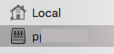
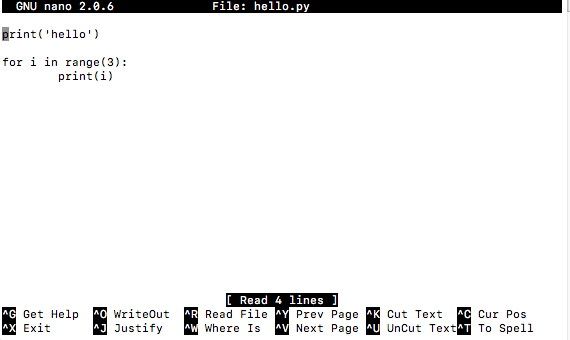

Les commandes UNIX¶
Les commandes UNIX permettent de contrôler l’ordinateur.
Le Finder¶
Le Finder est un gestionnaire de fichiers dans macOS. Il permet de manipuler les dossiers et de les
créer
afficher
trier

Vous pouvez créer des
nouvelles fenêtres (ctrl+N)
nouveaux dossiers (ctrl+maj+N)
Dossier home local/réseau¶

Mettre vos documents sur le réseau (p******) vous permet d’y accéder depuis tous les ordinateurs du gymnase.
Le terminal¶
Le terminal et une applications textuel qui permet de gérer et maitriser complètement la machine à l’aide de commandes écrites dans une console.
Au démarrage la console affiche la date et l’heure de sa dernière connection.
Last login: Thu Aug 26 11:32:24 on console
M507-2:~ pp77$
Ensuite elle affiche:
machine (
M507-2)dossier actuel (
~home)utilisateur (
pp77)prompt (
$) ou invite
C’est après le prompt ($) que vous pouvez entrer une commande.
La commande pwd (print working directory) affiche le dossier actuel.
M507-2:~ pp77$ pwd
/Users/pp77
Afficher le contenu¶
La commande ls [path] (listing) permet d’afficher le contenu d’un dossier. Utilisé sans argument, elle affiche le contenu du dossier actuel.
$ ls
Applications Downloads Movies Public
Desktop Library Music tmp
Documents Local Pictures
Pour afficher le contenu du dossier racine (root)
$ ls /
Applications Users dev var
Library Volumes etc sbin
Network bin home tmp
Le dossier /Users contient les dossier home des utilisateurs sur la machine
$ ls /Users/
admin pg14mry pj03qhj pl38fyb
pp77xir pv17sxo py26wnl py55bdt
Afficher un dossier sytème¶
Le dossier /bin contient les fichier binaires donc exécutable des commandes UNIX
$ ls /bin
pwd bash link rm
cat echo ln rmdir
chmod ed ls sh zsh
cp expr mkdir sleep
csh hostname mv stty
dash kill pax sync
date ksh ps tcsh
Vous y trouvez pwd et ls
Se déplacer dans l’arborescence¶
La commande cd (change directory) permet de se déplacer dans l’arborescence
pwd (print working directory)
cd
cd /
cd /bin
cd ~
cd ..
Dossiers particuliers¶
Plusieurs dossiers ont des abbréviations courtes
/ (root)
~ (home)
. (current)
.. (parent)
../.. (grand-parent)
Raccourcis¶
Les flèches haut/bas permettent de se promener dans l’historique des commandes que vous avez deuja utiliés. Souven il est plus rapide de chercher une commande récemment utilisé et la modifier avant de la reéxécuter.

Les flèches gauche/droite permettent de déplacer le curseur d’édition de la commande.

La touche TAB permet de compléter une chemin ou une commande. Par exemple vous pouvez écrire
cd /V
Au moment ou vous appuyez sur TAB le chemin est complété à ceci:
cd /Volumes
Vous pouvez de nouveau ajouter la première lettre du compte
cd /Volumes/p
En appuyant la touche TAB vous obtenez
cd /Voluves/pp77xir
Votre home directory¶
C’est votre dossier personnel local. Les fichiers résident en local sur cet ordinateur.
$ cd
$ pwd
/Users/pp77
Créer des dossiers¶
La commande mkdir (make directory) permet de créer un dossier.
mkdir oc
mkdir oc/music
La commande rmdir (remove directory) permet de supprimer un dossier.
rmdir oc
Chemin relatif/absolue¶
cd oc (relatif)
cd /Volumes/pp77xir/oc/ (absolu)
cd .. (relatif)
cd /Volumes/pp77xir/ (absolu)
Déplacer ou renommer¶
La commande mv (move) permet de déplacer (ou renommer) un fichier.
mv game game2
mv game2 ..
mv video demo
Afficher le contenue¶
La commande ls (listing) permet d’afficher le contenu d’un dossier. Par exemple ceci affiche le contenu de la racine (/ root)
$ ls /
Applications home
Library net
System opt
Users private
Volumes sbin
bin usr
cores var
Ceci afficher le contenu du dossier /bin
$ ls /bin/
pwd test bash link rmdir
chmod ed ls sh zsh
cp mv mkdir sleep date
Afficher les détails¶
Vous pouvez ajouter des options aux commandes. Par exemple ls -l affiche des détails
Touch¶
La commande touch (toucher) permet de mettre à jour la date de modification.
Si le fichier n’existe pas, un fichier de taille 0 est créé.
touch file_a
touch dossier_a
Jour et date¶
La commande date affiche la date et l’heure actuelle.
$ date
Mer 25 aoû 2021 14:09:10 CEST
La commande cal affiche un calendrier du mois.
$ cal
Août 2021
Di Lu Ma Me Je Ve Sa
1 2 3 4 5 6 7
8 9 10 11 12 13 14
15 16 17 18 19 20 21
22 23 24 25 26 27 28
29 30 31
L’éditeur nano¶
nano
# Titre
Ceci est une ligne de text.
Etappes:
ctr-X exit
Y pour sauvegarder
donner le nom demo.txt
Vérifier le fichier
ls
cat demo.txt
Lancer python¶
La commande python lance l’application Python en mode console.
$ python
Python 2.7.16 (default, Jan 26 2020, 23:50:38)
[GCC 4.2.1 Compatible Apple LLVM 9.0.0 (clang-900.0.31)] on darwin
Type "help", "copyright", "credits" or "license" for more information.
>>>
Après le prompt >>> vous pouvez entrer une commande.
>>> 2 ** 8
256
>>> 2 ** 32
4294967296
>>> print('hello ' * 3)
hello hello hello
Pour quitter Python
>>> quit()
Python 3¶
Pour lancer la version plus récente de Python, utilisez la commande python3
$ python3
Python 3.9.1 (v3.9.1:1e5d33e9b9, Dec 7 2020, 12:10:52)
[Clang 6.0 (clang-600.0.57)] on darwin
Type "help", "copyright", "credits" or "license" for more information.
>>>
Essayez maintenant d’entrer une boucle à la console
>>> for i in range(3):
... print('hello', i)
...
hello 0
hello 1
hello 2
Le prompt ... vous indique que la commande for n’est pas fini. La dernière ligne vide (...) indique la fin de la boucle et force l’exécution.
Créer un ficher et l’exécuter¶
Lancez l’éditeur nano avec un nom de fichier
$ nano hello.py
Entrez le texte suivant

sauvegarder avec ctrl+O (Output)
quitter avec ctrl+X (eXit)
Ensuite executez le programme depuis la console
$ python3 hello.py
hello
0
1
2